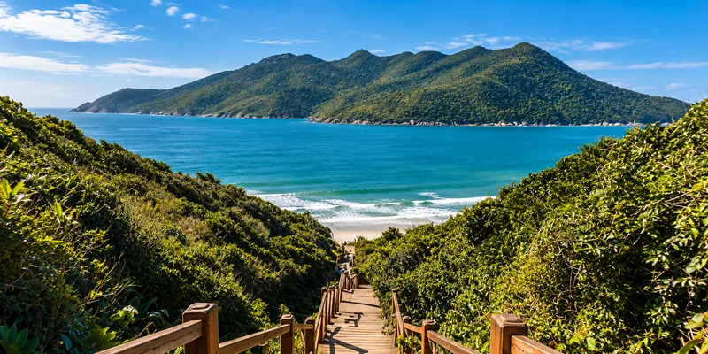

Dados
Localização: Paraná, Brasil
Região: Litoral do Paraná
Município: Paranaguá
Características: Praias, trilhas e áreas de preservação ambiental
Clima
Temperatura: 8 °C
Vento: 12 km/h
Sensação térmica: --
Sobre a Ilha do Mel
A Ilha do Mel está localizada no litoral do Paraná e é conhecida por suas paisagens naturais, praias, trilhas e áreas de preservação. O acesso à ilha é feito por embarcação, contribuindo para a preservação de seu ambiente natural.
Entre os lugares mais conhecidos estão o Farol das Conchas, a Fortaleza de Nossa Senhora dos Prazeres e a Gruta das Encantadas. A ilha oferece diversas oportunidades para caminhadas, contato com a natureza e apreciação das paisagens do litoral paranaense.